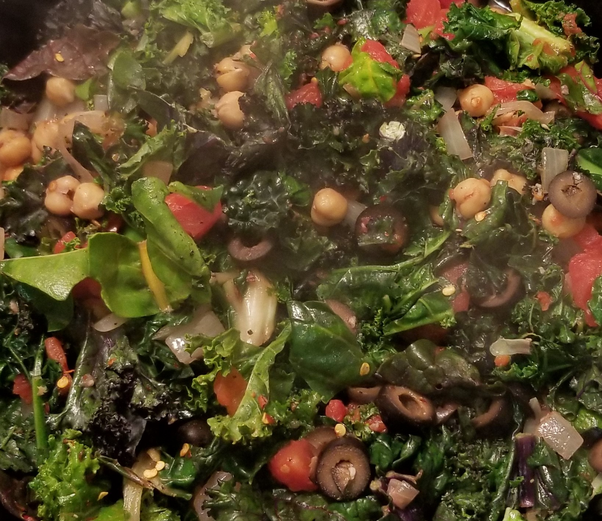

Chickpea Pasta

Ingredients
- Chickpeas - 1 can
- Pasta - 1 box
- Black Olives - 1 can
- Tomatoes - 1 can or package
- Onion - 1 whole
- Kale - 1-2 stalks
- Garlic - 3-5 cloves
- Salt
- Black Pepper
- Oregano
- CRP
- Olive Oil
- Red Wine
Directions
- Fill saucepan with water over high heat.
- Fill bottom of cast iron skillet with thin layer of olive oil, turn to medium heat.
- Open can of chickpeas, rinse with water and drain.
- Empty can of chickpeas into cast iron, stir occasionally.
- While chickpeas cook, dice onion and garlic cloves.
- Add diced onion and garlic to cast iron with a few dashes of salt, black pepper, crp and oregano.
- By now water in saucepan should be boiling, add pasta to saucepan.
- Open can of olives and slice.
- By now onions should be somewhat translucent. Add kale and tomatoes to cast iron along with a hearty splash of red wine.
- Stir contents of cast iron occasionally until pasta is done.
- Strain pasta, remove from heat.
- Add sliced black olives to cast iron, stir until warm. Add additional salt, black pepper, oregano and crp to taste.
Contact
scott.kinyon@umontana.edu
The University of Montana
32 Campus Dr
Missoula, MT 59812